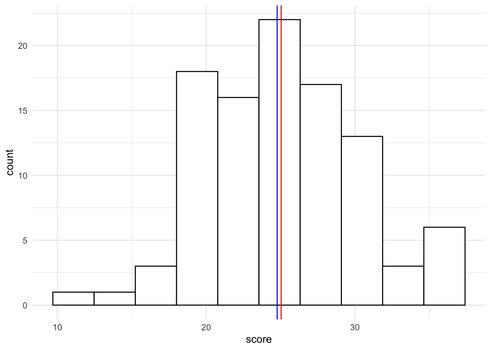
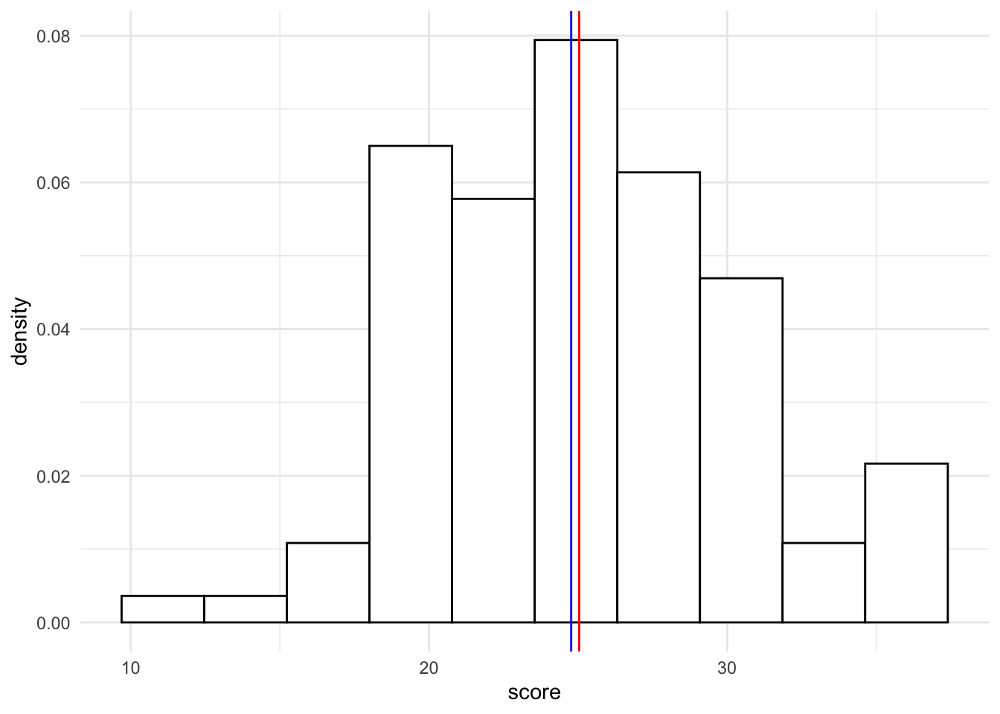
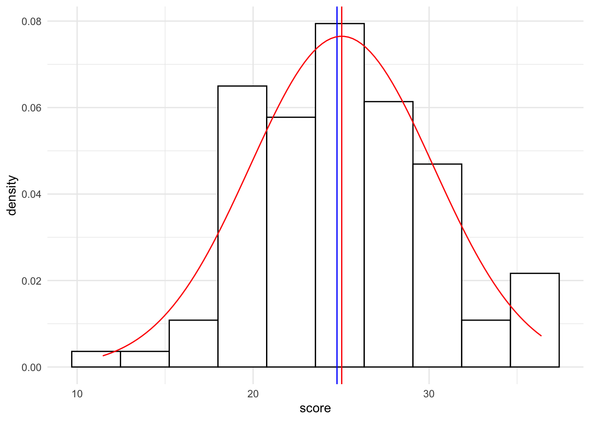
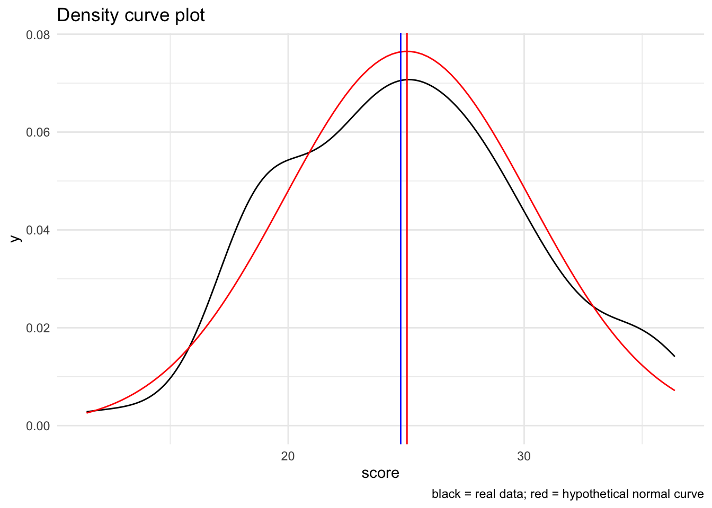
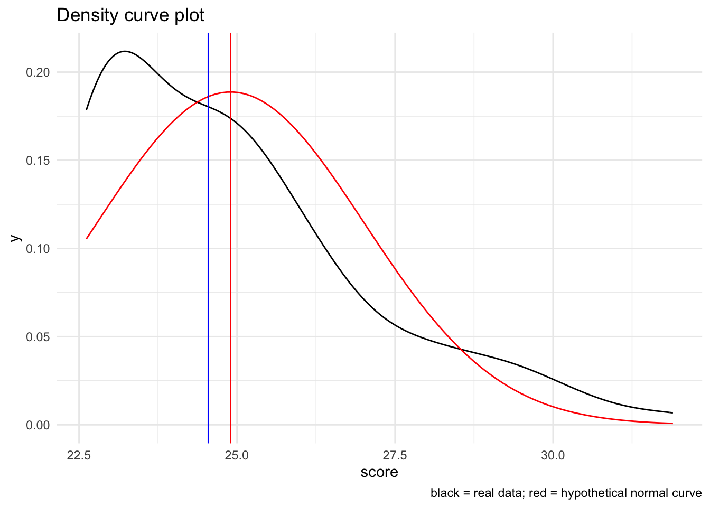
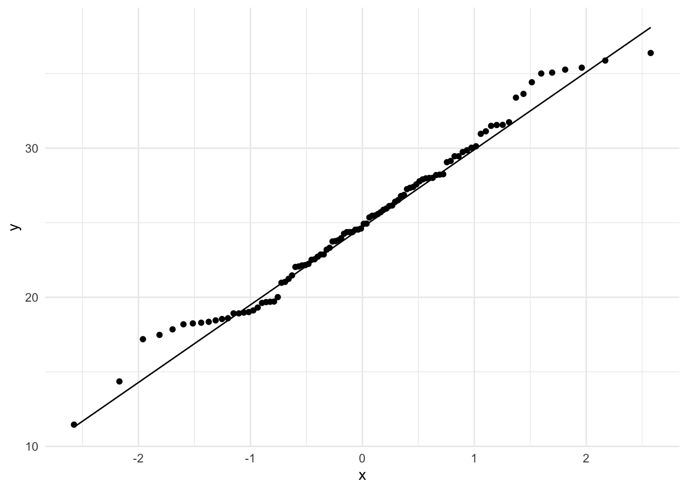
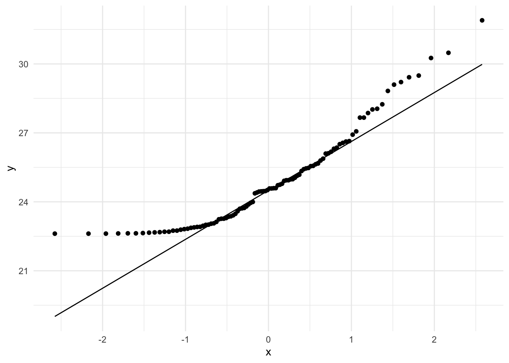
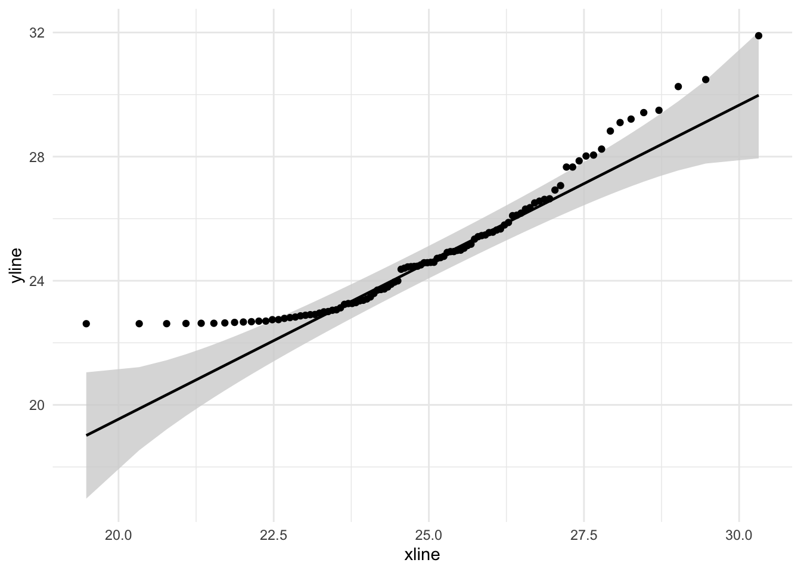

pacman::p_load(tidyverse, car, SimDesign, regclass)15 The normal distribution
This vignette uses the following packages:
16 Normality Assumption
In class we discussed that one of the first and important steps when taking a look at your data is to assess whether the data conform to the assumptions of your analysis of choice. For most parametric tests (e.g., regression, t-tests, ANOVA families), one of the key assumptions is that scores of your dependent variable(s) approximate some known distribution. The distribution that gets the most play in this course is the normal distribution. That said, real world data, especially from the social sciences, is rarely perfectly normal, but rather “normal enough” to proceed with parametric tests. With this in mind, there are other distributions that are important to know about, including the binomial, Poisson, and exponential distributions that may more readly approximate your data. We’ll discuss these in class when the time comes. For now, we’ll focus on the normal distribution.
In the interest of having a unified resource, I’m putting together a brief vignette highlighting methods for assessing whether your data is normal or not. I stress the word “assess” and not “test” for reasons that will be made apparent below. My best advice is to take several tools to make the decision of whether your data is normal or not.
In brief there are three “tools” for assessment:
- plotting your data using histograms and QQ-plots
- evaluating measures of skew and kurtosis
- significance tests for normality
It may be temping to believe that #3, significance testing, would be a magic bullet. However, many (including Field, Section 5.6, we need to be cautious with tests like Kolmorogorov and Shapiro-Wilks. In my own practice, I typically use them last in the case of extreme ambiguity, but more often to confirm what I already believe (journals like “tests to confirm”).
Before reaching your conclusion you should employ multiple methods!!
16.1 Structure of this vignette
In the first half of this vignette I’ll discuss how to apply each of these tests in their most general form. In the interest of time, in cases where these methods are discussed in your textbooks I will point there. When warranted, I’ll offer additional exposition.
In the second half of this vignette I’ll outline use cases for several of the scenarios that we will encounter this semester, offering tips and code templates for how to address each scenario. This will be populated in upcoming weeks
Before we start, let’s generate a normal_sample of 60 observations that we know will be approximately normal and a positively skewed distribution skewed_sample:
set.seed(920)
# create a normal distribution mean 25, sd = 5
normal_sample <- tibble("observation" = 1:100,
"score" = rnorm(n = 100, mean = 25, sd = 5))
# create a skewed distribution using SimDesign package
pacman::p_load("SimDesign")
set.seed(920)
skewed_sample <-
tibble("observation" = 1:100,
"score" = SimDesign::rValeMaurelli(100, mean=25, sigma=5, skew=1.8,
kurt=4) %>% as.vector()
)16.2 Part 1: Visual assessment tools
I can’t say it enough, one of the first things to do is plot your data. On of the first plots you should generate is a plot of the distribution of your variables as they fit within your design (more on this in Part 2). You friends here are the histogram plot and the QQ-plot.
16.2.1 Histogram plot
A histogram plot is simply a plot of the distribution of score. Typically this takes the form of the number, or raw count) of scores within a number of preset bin (sizes), but can also take the form of the density, or proportion of scores. You’ll need to create a density plot to overlay with a normal curve (a least using ggplot). I’ll revisit the basics here, but the last 2 plot examples here are most useful to you.
16.2.1.1 What to look for
The degree to which your data are (1) asymmetrical around the mean and median and (2) fits with a theoretical normal curve with the same mean and sd parameters.
16.2.1.2 Basic histogram (raw counts)
Using ggplot we’ll plot a histogram of the counts of scores, placing vertical lines at the mean and median scores:
ggplot(normal_sample, aes(x = score)) +
geom_histogram(bins = 10,
fill = "white",
color = "black") +
geom_vline(xintercept = mean(normal_sample$score), color="red") +
geom_vline(xintercept = median(normal_sample$score), color="blue") +
theme_minimal()
A good rule of thumb is to overlay the plot with a normal curve (theoretical distribution). The easiest way to do this is to transform your count histogram into a proportion, or density, histogram first:
16.2.1.3 Density histogram (proportions)
To get a histogram with proportions instead of raw values, you simply add aes(y=..density..) to geom_histogram()
ggplot(normal_sample, aes(x = score)) +
geom_histogram(bins = 10,
fill = "white",
color = "black",
aes(y=..density..) # turns raw scores to proportions
) +
geom_vline(xintercept = mean(normal_sample$score), color="red") +
geom_vline(xintercept = median(normal_sample$score), color="blue") +
theme_minimal()Warning: The dot-dot notation (`..density..`) was deprecated in ggplot2 3.4.0.
ℹ Please use `after_stat(density)` instead.
16.2.1.4 Histogram with normal curve overlay
To overlay a normal curve we need to add stat_function to our ggplot. Note that the arguments are essentially running a dnorm with a unit mean and sd from our scores. If we are simply adding the normal curve to a density plot we add the following:
# create a density plot
ggplot(normal_sample, aes(x = score)) +
geom_histogram(bins = 10,
fill = "white",
color = "black",
aes(y=..density..) # turns raw scores to proportions
) +
geom_vline(xintercept = mean(normal_sample$score), color="red") +
geom_vline(xintercept = median(normal_sample$score), color="blue") +
stat_function(fun = dnorm, # generate theoretical norm data
color = "red", # color the line red
args=list(
mean = mean(normal_sample$score,na.rm = T), # build around mean
sd = sd(normal_sample$score,na.rm = T) # st dev parameter
)
) +
theme_minimal()
16.2.1.5 Density curve with with normal curve overlay
Note that it may actually be simpler to simply create a density curve of the data and overlay it with a normal curve. The resulting plot is a smooth-function interpretation of the distribution of the data:
# create a raw plot
ggplot(normal_sample, aes(x = score)) +
geom_density() +
stat_function(fun = dnorm, # generate theoretical norm data
color = "red", # color the line red
args=list(
mean = mean(normal_sample$score,na.rm = T), # build around mean
sd = sd(normal_sample$score,na.rm = T) # st dev parameter
)
) +
geom_vline(xintercept = mean(normal_sample$score), color="red") +
geom_vline(xintercept = median(normal_sample$score), color="blue") +
labs(
title = "Density curve plot",
caption = "black = real data; red = hypothetical normal curve"
) +
theme_minimal()
16.2.1.6 Non-normal example
I’m going to recreate the density histogram using the skewed_sample to give you a feel for what this looks like.
Recall that we generated the skewed sample using:
skewed_sample <-
tibble("observation" = 1:100,
"score" = SimDesign::rValeMaurelli(100, mean=25, sigma=5, skew=1.5,
kurt=3) %>% as.vector()
)Visually:
# create a raw plot
ggplot(skewed_sample, aes(x = score)) +
geom_density() +
stat_function(fun = dnorm, # generate theoretical norm data
color = "red", # color the line red
args=list(
mean = mean(skewed_sample$score,na.rm = T), # build around mean
sd = sd(skewed_sample$score,na.rm = T) # st dev parameter
)
) +
geom_vline(xintercept = mean(skewed_sample$score), color="red") +
geom_vline(xintercept = median(skewed_sample$score), color="blue") +
labs(
title = "Density curve plot",
caption = "black = real data; red = hypothetical normal curve"
) +
theme_minimal()
Again, notice how the data are both shifted and do not cleanly fit with the normal curve.
16.2.2 Quantile-quantile plots
Normality can also be visually assessed using a quantile-quantile plot. A quantile-quantile plot compares raw scores with theoretical scores that assume a normal distribution. If both are roughly equal then the result should be that the points fall along a line of equality (qq-line). In a quantile-quantile plot deviations from the line indicate deviations from normality.
16.2.2.1 What to look for
A large number of significant deviations (outside the bands) is a hint that the data is non-normal. This link on CrossValidated is pretty good in terms of interpreting Q-Q plots. Note that for more stringent criteria one can take a look at the correlation between the raw sample data and the theoretical normed data.
16.2.2.2 Basic qqplot
There are several ways to put together a QQ-plot; my preferred are (1) using the car::qqPlot function when just taking a quick look; (2) using ggplot when I need something “publication worthy” or when I’m conducting more complex analysis. A third method that I’ll used here regclass::qq is useful as a learning example.
First, lets take a look at normal_sample$score using car::qqPlot:
This produces a QQ-plot with a confidence envelope based on the SEs of the order statistics of an independent random sample from the comparison distribution (see Fox 2016, Applied Regression Analysis and Generalized Linear Models, Chapter 12). The highlighted observations, in this case 12 and 92 are the 2 scores with the largest model residuals—in this case deviation from the mean, but we can through linear model outputs into this function (see Week 6 of class: Modeling with continuous predictors / simple regression)
The x-values are the normed quantiles, while the y-values are our actual raw scores. The normed quantiles values are essentially normed stand-ins for “what the raw values should be if the data was normal. To demonstrate this let’s use the regclass:qq function:
As you can see this is the exact same plot. We typically focus on the quantile values as they allow us to better compare data across different distributions.
Taking a look both our normal_sample and skewed_sample.
Finally we can use ggplot to construct better looking plots.
ggplot(normal_sample, aes(sample=score)) +
geom_qq() + geom_qq_line() +
theme_minimal()
ggplot(skewed_sample, aes(sample=score)) +
geom_qq() + geom_qq_line() +
theme_minimal()
16.2.2.3 Advanced qqplot with 95% CI bands
We can also create bands around these plots using the qqplotr library in conjuction with ggplot:
pacman::p_load(qqplotr)
ggplot(normal_sample, aes(sample=score)) +
stat_qq_band(fill="lightgray") + stat_qq_point() + stat_qq_line() +
theme_minimal()ggplot(skewed_sample, aes(sample=score)) +
stat_qq_band(fill="lightgray") + stat_qq_point() + stat_qq_line() +
theme_minimal()
16.2.2.4 Advanced qq-plot & correlation
** note that some of what you see here may not be covered until our Week 6 discussion on correlation.
I usually stop with visual inspection, BUT if you want to be more rigorous, you can take the data from the qq_plot can measure the correlation, \(r\) between the actual sample distribution and the theoretical distribution that make up the qqplot. Keep in mind that under a perfectly ideal situation the sample distribution should equal the theoretical distribution resulting in \(r = 1\) (and all points falling along the qq_line). Thus, deviations away from 1 tell us how “off” this fit is, where lower \(r\) values indicate poorer fits between sample and theoretical.
First, let’s recreate the plot:
norm_qq_qplot <- ggplot(normal_sample, aes(sample=score)) +
stat_qq_band(fill="lightgray") + stat_qq_point() + stat_qq_line() +
theme_minimal()The data used to create the plot can be extracted from our ggplot using ggplot_build.
# run this, this prints out a lot in the console!!!
# you may need to scroll up
ggplot_build(norm_qq_qplot)As you can see ggplot_build pulls several list items related to the construction of the plot. From this list we are most concerned with $data[[2]] which contains the sample and theoretical values uses to populate the x and y axes of the plot. From here we can save the data from ggplot_build to an object and get the correlation between sample and theoretical. You’ll note I didn’t use cor.test() as I’m not interested in how far away from 0 I am (the null hypothesis of cor.test()). Take from that what you will.
qq_plot_data <- ggplot_build(norm_qq_qplot)$data[[2]]
cor_qq_Normal <- cor(qq_plot_data$sample,qq_plot_data$theoretical)
cor_qq_Normal[1] 0.9922899If we wanted to be extra judicious we could then compare this value against a correlation of 1:
cor_norm <- cor(qq_plot_data$sample,qq_plot_data$theoretical)
DescTools::FisherZ(1-cor_norm) %>% pnorm()[1] 0.5030759Compare this value to the skewed_sample:
skew_qq_qplot <- ggplot(skewed_sample, aes(sample=score)) +
stat_qq_band(fill="lightgray") + stat_qq_point() + stat_qq_line() +
theme_minimal()
qq_plot_data <- ggplot_build(skew_qq_qplot)$data[[2]]
cor(qq_plot_data$sample,qq_plot_data$theoretical)[1] 0.9453017cor_skew <- cor(qq_plot_data$sample,qq_plot_data$theoretical)
DescTools::FisherZ(1-cor_skew) %>% pnorm()[1] 0.521832416.3 Measures of skew and kurtosis
Measures of skew and kurtosis may be obtained using the psych::describe() function. There is some debate concerning the interpretation of these values. First let’s obtain skew and kurtosis using the psych::describe() function. From here well walk-though the specifics of what these values are and how to interpret them (and limitations). I’ll finally offer a recommendation I’ll point you in the direction of several resources in this debate as well as summarize key issues as I see them.
First normal_sample:
vars n mean sd median trimmed mad min max range skew kurtosis se
X1 1 100 25.04 5.22 24.77 24.84 5.15 11.46 36.39 24.93 0.15 -0.35 0.52Alternatively, you can call skew() and kurtosi() seperately:
normal_sample$score %>% skew()[1] 0.1451337normal_sample$score %>% kurtosi()[1] -0.4427668Now skewed_sample:
psych::describe(skewed_sample$score, type = 2) vars n mean sd median trimmed mad min max range skew kurtosis se
X1 1 100 24.9 2.11 24.55 24.6 2.21 22.62 31.9 9.28 1.09 0.76 0.2116.3.1 using the non-transformed values
The values of skew and kurtosis are calculated using the three types outlined by Joanes and Gill (1998) here. By default, for psych::describe(), type=3, which corresponds to \(b_1\) and \(b_2\) from Joanes and Gill. Note that type=2 corresponds to the values obtained using SPSS. For the purposes of comparison we will use type=2, though note that each (type=2 or type=3) has its advantages, see Joanes and Gill, 1998 for more detail. As relayed by Kim (2013) here, if one wants to assess skew and kurtosis based upon these raw values, then any value > 2 for skew or > 4 for kurtosis should be viewed as suspect.
16.3.2 using the standardized values
However, as Kim notes, one can apply a test of standardized test for normality by dividing the skew and kurtosis by their respective standard errors. Note that SPSS will provide you with this standard error estimate. R by default does not. You may elect to replicate the SPSS method, again based on type=2 calculations, by importing the function found below (taken from Howard Seltman, here). Once you have imported the function spssSkewKurtosis you can simply call spssSkewKurtosis(vector). For example, with skewed_sample:
# Skewness and kurtosis and their standard errors as implemented by SPSS
#
# Reference: pp 451-452 of
# http://support.spss.com/ProductsExt/SPSS/Documentation/Manuals/16.0/SPSS 16.0 Algorithms.pdf
#
# See also: Suggestion for Using Powerful and Informative Tests of Normality,
# Ralph B. D'Agostino, Albert Belanger, Ralph B. D'Agostino, Jr.,
# The American Statistician, Vol. 44, No. 4 (Nov., 1990), pp. 316-321
spssSkewKurtosis <- function(x) {
w=length(x)
m1=mean(x)
m2=sum((x-m1)^2)
m3=sum((x-m1)^3)
m4=sum((x-m1)^4)
s1=sd(x)
skew=w*m3/(w-1)/(w-2)/s1^3
sdskew=sqrt( 6*w*(w-1) / ((w-2)*(w+1)*(w+3)) )
kurtosis=(w*(w+1)*m4 - 3*m2^2*(w-1)) / ((w-1)*(w-2)*(w-3)*s1^4)
sdkurtosis=sqrt( 4*(w^2-1) * sdskew^2 / ((w-3)*(w+5)) )
mat=matrix(c(skew,kurtosis, sdskew,sdkurtosis), 2,
dimnames=list(c("skew","kurtosis"), c("estimate","se")))
return(mat)
}
# skewed_sample
spssSkewKurtosis(skewed_sample$score) estimate se
skew 1.0902510 0.2413798
kurtosis 0.7607103 0.4783311Also note that you can source this custom code to your environment whenever you want using:
# I typically source files in the first chunk as well
source("http://www.stat.cmu.edu/~hseltman/files/spssSkewKurtosis.R")From here we could divide each estimate by their se and apply the critical values as recommended by Kim:
spssSkewKurtosis(skewed_sample$score)[,1]/
spssSkewKurtosis(skewed_sample$score)[,2] skew kurtosis
4.516745 1.590342 According to Kim:
- if \(N\) < 50, any value over 1.96
- if (50 < \(N\) < 300), any value over 3.29
- if \(N\) > 300, no transform: any value of 2 for skew and 4 for kurtosis.
Both skew and kurtosis fail the normal test. Compare this to normal_sample:
spssSkewKurtosis(normal_sample$score)[,1]/
spssSkewKurtosis(normal_sample$score)[,2] skew kurtosis
0.6197350 -0.7288419 Both absolute values are below 3.29.
16.3.3 using a bootstrapped standard errors (recommended)
There is a caveat to the test method from the previous section. The standard errors calculated above work for normal distributions, but not for other distributions. Obviously this is a problem, as by definition we are using the above method, including the standard errors, to test for non-normality. If our distribution is non-normal, then the standard error that we are using to test for non-normality is suspect!! See here for a brief discussion. And a solution, DescTools!!
The solution involves bootstrapping the 95% confidence interval and estimating the standard error. DescTools::Skew() and DescTools::Kurt() both provide this option, using ci.type="bca". This method is also recommended by Joanes and Gill. Note that here method refers to the type of skew and kurtosis calculation (again, keeping it 2 for the sake of consistency, although 3 is fine as well).
pacman::p_load(DescTools)
# bootstrap with 1000 replications (R=1000)
DescTools::Skew(x = skewed_sample$score, method = 2, ci.type = "bca", conf.level = 0.95, R = 1000) skew lwr.ci upr.ci
1.0902510 0.7315529 1.5456300 from here, the standard error may be estimated by taking the range of the bootstrapped confidence interval and dividing it by 3.92
bca_skew <- DescTools::Skew(x = skewed_sample$score, method = 2, ci.type = "bca", conf.level = 0.95, R = 1000)
ses <- (bca_skew[3]-bca_skew[2])/3.92
ses %>% unname() # unname simply removes the name[1] 0.2064468From here we can take the obtained skew and divide it by the standard error, ses.
DescTools::Skew(x = skewed_sample$score, ci.type = "bca", conf.level = 0.95, R = 1000)[1] / ses skew
5.123651 Similar steps can be taken for kurtosis:
bca_kurtosis <- DescTools::Kurt(x = skewed_sample$score, ci.type = "bca", conf.level = 0.95, R = 1000)
ses <- (bca_kurtosis[3]-bca_kurtosis[2])/3.92
DescTools::Kurt(x = skewed_sample$score, ci.type = "bca", conf.level = 0.95, R = 1000)[1]/ses kurt
0.795541 The logic of this. Consider that we have bootstrapped a distribution of skews and or kurtosi just as we have done in the past with means. From class we know that the standard error equals the standard deviation of this distribution. The 95% CI obtained from bootstrapping are equivalent to ±1.96 * the standard deviation. Therefore we can obtain the standard error by dividing the width of the 95% CI by 2 * 1.96 or 3.92.
Admittedly, coding this by hand is a bit of a chore, but the beauty of programming is that we can create our own functions for processes that we routinely perform.
In this case I want to input a vector like skewed_sample$score and have it return the bootstrapped ses and the resulting skew and kurtosis.
I’ll name this function skew_kurtosis_ses. Notice how I’m just taking the steps that I’ve performed before and wrapping them in the function:
# Skewness and kurtosis and their standard errors as determined
# using boostrapped confidence intervals
# Arguments:
# - x: vector of data you wish to analyze
# - calc_method: method of calculating skew and kurtosis, used by DescTools, defaults to "2"
# - calc_ci: how to derive conf. intervals, for DescTools, default "bca"
# - reps: How many bootstrap repetitions, recommend at least 1000
# Result: a 2x2 matrix with standardized skew and kurtosis (z)
# as well as critical values to compare against.
# Values as recommended by Kim (2013) Statistical notes for clinical
# researchers: assessing normal distribution (2) using skewness and kurtosis.
skew_kurtosis_z <- function(x, calc_method = 2, calc_ci = "bca", reps = 10000){
# get skew and kurt and their cis
skew_ci <- DescTools::Skew(x, method = calc_method, ci.type = calc_ci,
conf.level = 0.95, R = reps)
kurt_ci <- DescTools::Kurt(x, method = calc_method, ci.type = calc_ci,
conf.level = 0.95, R = reps)
# calculate ses from ci
skew_ses <- (skew_ci[3] - skew_ci[2])/3.92
kurt_ses <- (kurt_ci[3] - kurt_ci[2])/3.92
# calculate standardized valuess
skew_z<- skew_ci/skew_ses
kurt_z<- kurt_ci/kurt_ses
# remove names and ci columns
skew_z <- unname(skew_z)[1]
kurt_z <- unname(kurt_z)[1]
values <- data.frame("values" = rbind(skew_z,kurt_z))
# what are the critical values?
N <- length(x)
crit_vals<- ifelse(N<50, 1.96,
ifelse(N<300, 3.29)
)
round(cbind(values,crit_vals),digits = 2) # round to 2 digits
}Now to test my function:
skew_kurtosis_z(x = skewed_sample$score, calc_method = 2, calc_ci = "bca", reps = 1000) values crit_vals
skew_z 5.49 3.29
kurt_z 0.98 3.29For those interested this function can be found on my github.com page, here, and sourced like so:
source("https://raw.githubusercontent.com/tehrandavis/PSYC7014/master/custom_functions/skew_kurtosis_z.R")You can also save it to your own computer and source it from there as needed.
Keep in mind since we are bootstrapping from random selection your absolute magnitudes will vary.
16.4 Significance Tests
16.4.1 Shapiro-Wilks
The formal normality tests including Shapiro-Wilks test may be used from small to medium sized samples (e.g., n < 300), but may be unreliable for large samples. It outputs a test statistic W that is tested against deviations from 1. This can be run by:
shapiro.test(normal_sample$score)
Shapiro-Wilk normality test
data: normal_sample$score
W = 0.98327, p-value = 0.2369